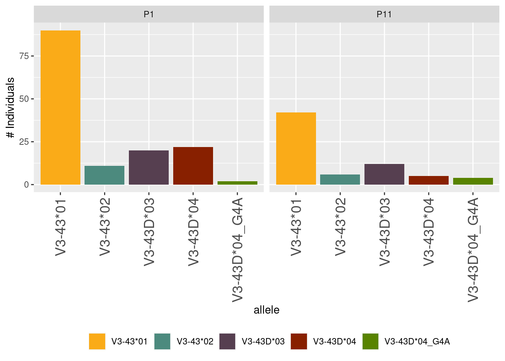
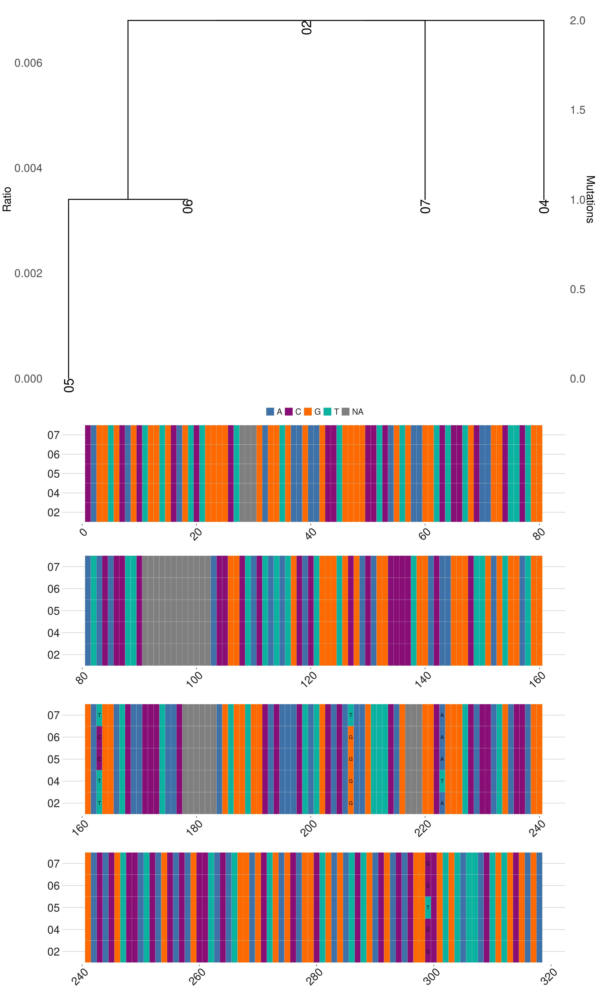

3 IGHV1-2 - G2
3.1 Allele appearnce
The group of IGHV1-2 includes 7 alleles, 7 out of the alleles are functional.
For each allele we counted the number of appearances across the population, any appearance was considered valid.

3.2 Group alignment
Based on the viewd alleles, we calculated the distance between the germline sequences.

3.3 Sequence depth
To examine the potential cutoff we observed the sequence depth for each allele
3.4 0.5% cutoff
We set an initial cutoff of \(0.5\%\) to determine the potential genotype priors. For this cutoff we examined the zygousity state, such as homozygousity, heterozygousity and so on.
With the selected cutoff we saw that there are 8 zygousity states.
3.5 Observations
This section is editable by clicking on the edit button below. To refresh the section click on the refresh button
You can access the file also from here
3.6 Conclusions
From the results we belive that the cutoff for this group should be closer to \(2\%\) except allele 05 that should stay at \(0.5\%\) , and for the adjusted states the allele combinations and the relations are stated in the table below.
3.6.1 Allele specific cutoff: 2% for all except 0.5% for allele 05
For interactive play on the threshold and relative allele fractions, please refer to this site
3.6.2 Allele specific cutoff: 5% for all except 0.5% for allele 05
For interactive play on the threshold and relative allele fractions, please refer to this site